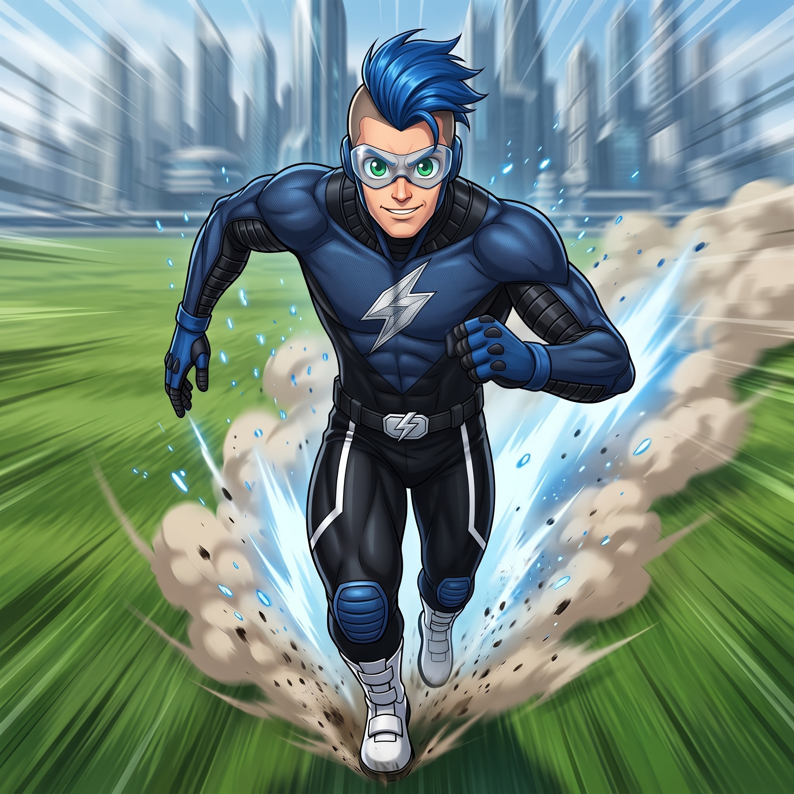
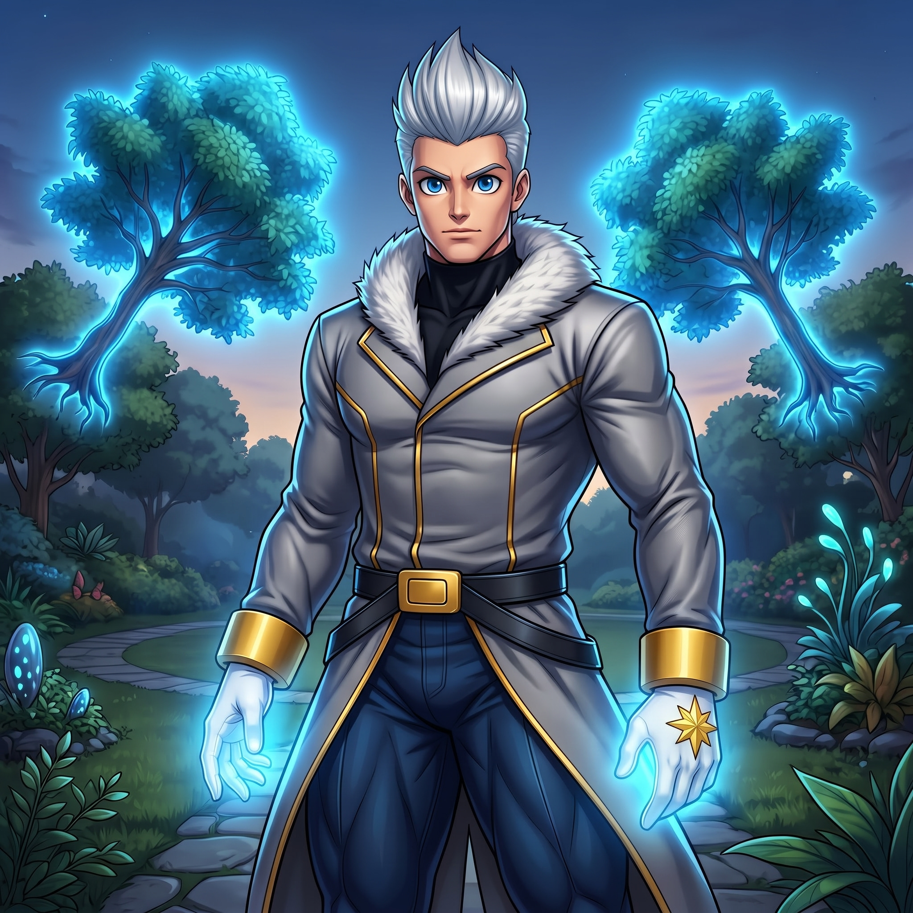
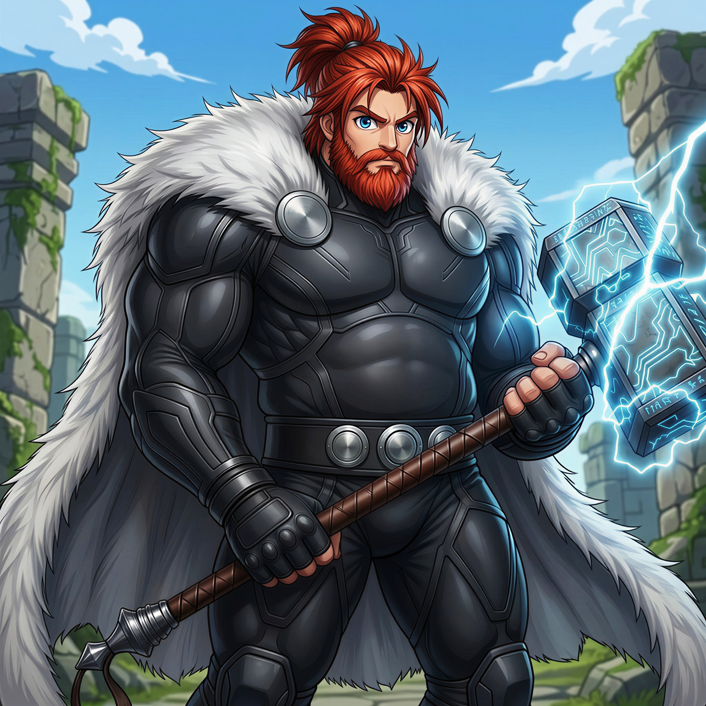

Registro: 23/06/2000 | 1,82 m | 84 kg
História: Soren Knox nasceu na Escócia durante uma tempestade intensa, quando um raio provocou um apagão total no hospital no exato momento de seu parto, um presságio silencioso do poder que despertava. Filho de Ethan e Miranda Knox, teve sua habilidade revelada aos 3 meses de idade, quando desapareceu do berço e foi encontrado atravessando o bairro em velocidade sobre-humana. Com o passar dos anos, aprendeu instintivamente a controlar sua supervelocidade, realizando atos heroicos ainda criança, salvando pessoas e impedindo crimes antes mesmo de ser percebido. Na adolescência, treinou em segredo para superar os limites do próprio corpo, refinando técnicas de combate baseadas em velocidade extrema. Tornou-se mundialmente conhecido aos 21 anos após desmantelar sozinho uma célula criminosa transnacional, e desde então viaja o mundo enfrentando ameaças que colocam em risco o equilíbrio mundial.

Registro: 12/12/2312 | 1,90 m | 93 kg
História: Chronos Tempest nasceu no século XXIV, em uma era onde a humanidade havia alcançado o auge da tecnologia, da paz e do conhecimento. Criado em laboratório e educado por sistemas automatizados, tornou-se um gênio isolado, incapaz de encontrar propósito em um mundo perfeito, porém vazio de emoção. Em um ato proibido, ativou um protótipo experimental de viagem temporal que o lançou para o ano de 2026, criando uma nova ramificação no multiverso sem alterar sua linha do tempo original. Ao encontrar uma linha do tempo caótica, marcada por supervilões, monstros e organizações secretas, Chronos sentiu-se vivo pela primeira vez. Decidido a permanecer, passou a usar suas habilidades de telecinese para enfrentar esse cenário instável, e ciente do perigo que sua tecnologia representa, ele esconde a máquina do tempo em sua base secreta para impedir que caia em mãos erradas.

Registro: Idade Imprecisa | 2,08 m | 210 kg
História: Eldran Lamont nasceu na Escandinávia, onde cresceu em meio a uma cultura marcada pela honra, coragem e espírito guerreiro. Desde a infância, destacava-se por seu senso de justiça inabalável e pelo impulso quase instintivo de proteger os inocentes, mesmo à custa da própria vida, postura que o tornou um guerreiro respeitado entre seu povo. Aos 32 anos, durante uma expedição a ruínas ancestrais nas montanhas, Eldran encontrou o lendário Thunderforge, um martelo tecnomágico dotado de uma inteligência artificial ancestral, que o submeteu a um ritual de escolha em três etapas: análise neural, avaliando sua mente e intenções; assinatura vital, confirmando sua força e resiliência física; e leitura espiritual, julgando sua essência e senso de justiça. Considerado digno, Eldran recebeu o dom da eletrocinese e a dádiva da imortalidade, passando então a adotar o codinome Thundrax e a vagar pelo mundo por séculos, enfrentando tiranos, entidades sombrias e ameaças capazes de mergulhar o mundo no caos. Com o tempo, aceitou o peso da imortalidade e tornou-se uma lenda viva, atuando como um guardião silencioso nas sombras enquanto o tempo avança.